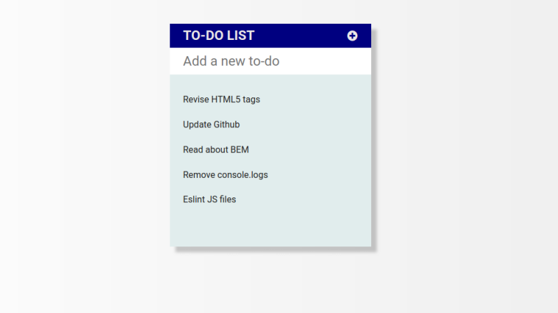

Todo List
A todo list where you can add new todos. You can also mark it as completed or remove it completely.

Technologies and tools
- HTML, CSS, SASS
- Java Script, JQuery
- Visual Studio Code
- npm, webpack
- stylelint, prettier, eslint
- babel, browserlist, devServer, PostCSS, others
Notable features
- JS module pattern
- Responsive
- font awesome, roboto
Notes
- bgr gradients, box-shadow
- Fixes footer at the bottom
-
// JQuery: event delegation with a ul and future li items $todoList.on("click", ".list__item", function processCompleted(e) { if (e.target.nodeName.toLowerCase() === "li") { // how to check what element trigerred event } }); - JQuery fadeIn(), toggleClass(), closest(), remove(), parent()
Validation
- Remove console, alert, etc in eslint config!
- remove comments
- Remove unnecessary links
- clean package.json dependencies
- update package.json description
- update github - master branch?!
- Compress images
- ww3validator for html
- ww3validator for css
- dev Tools - audits (also Chrome Lighthouse extension)
- dev Tools - coverage
- https://www.webpagetest.org/
- https://frontendchecklist.io/
- https://chrisbateman.github.io/webpack-visualizer/ + npm run stats